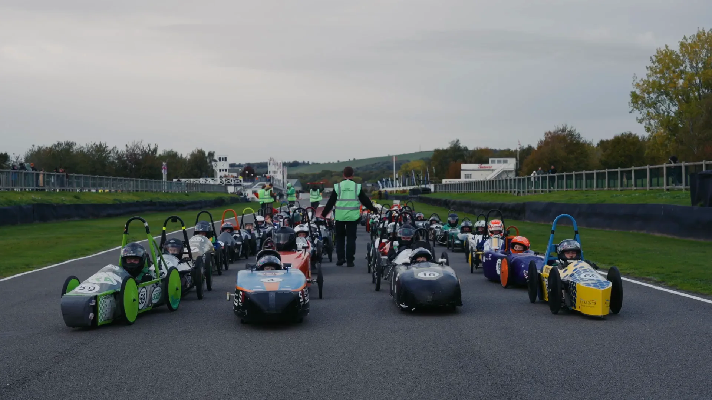

Featured project · Motorsport
Greenpower.
Event coverage of the Greenpower International Finals 2026: one race day, turned into a highlight film and a run of social clips.
01 · Event coverage
International Finals 2026
The Greenpower Education Trust runs electric car racing for young engineers. We were there on the Sunday to capture its International Finals.
The brief
Greenpower asked for a highlight video of the event in two formats: horizontal for long form on YouTube and vertical for social media, with a set of social clips to go alongside it.
What we made
We delivered the highlight in both formats: a 2:32 widescreen film for YouTube, and a 1:14 vertical version for Instagram, TikTok and YouTube Shorts.
From the same day we cut the social clips below, including a reel with Steve Smith of 4QD on where a speed controller sits between the battery and the motor, with captions, animated diagrams and sound design in Greenpower's brand colours.
The result
We followed the brief closely, and Greenpower were very pleased with what they got.
02 · Social
Made for the feed
The vertical highlight, plus reels and feed posts from the same day, made to go out alongside the film.